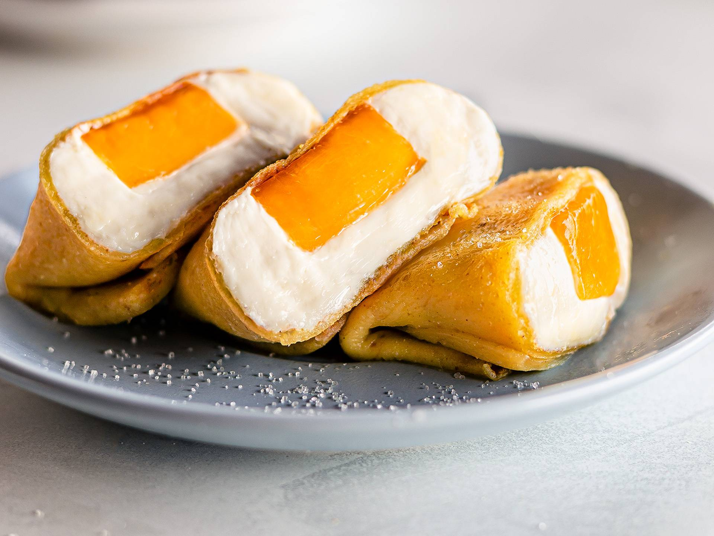
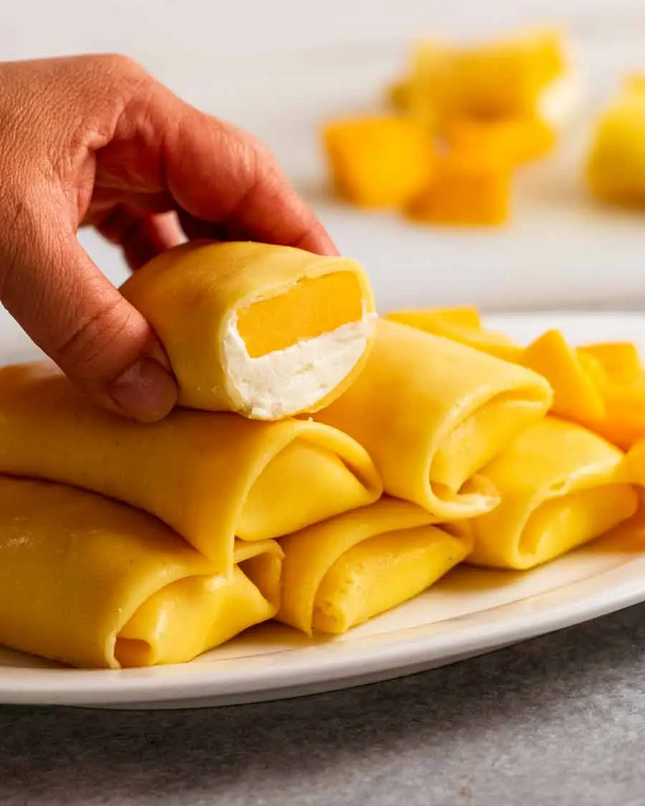

Mango Pancake

Description
Mango pancakes are thin yellow crepes rolled up like a spring roll with
whipped cream and a big juicy piece of mango stuffed inside.
Ingredients
Pancake (crepe) batter
- Plain/all-purpose flour
- Icing sugar
- Cornflour/cornstarch
- Eggs
- Milk
- Yellow food colouring
Whipped cream filling
- Thickened/heavy cream or other whipping cream
-
Icing sugar/powdered sugar - can use ordinary white sugar (just will
take longer to dissolve)
- Vanilla extract
Mango
- 2 of your favourite type of mango
Steps
Batter
-
Batter - Pour the milk into a bowl then sift the dry
ingredients in (flour, cornflour, icing sugar). Whisk until lump free,
then whisk in the eggs and food colouring. The batter will be very,
very thin.
-
Refrigerate for 1 hour. Don't skip or shortcut this
step as during this resting time, the flour absorbs liquid which makes
the crepe softer so you can roll the crepes without cracking. Also,
the batter thickens slightly to the right consistency for cooking.
Cook Pancakes (crepes)
- Measure out 45 ml / 3 tablespoons of batter.
-
Spray a non stick pan lightly with oil then heat over
a medium low stove. Use an appropriately sized pan!
-
Pour the batter evenly into the pan - should sizzle
very lightly
-
Set to touch - Cook for 45 seconds to 1 minute or
until the middle is set to touch. Do not flip in the pan. We only cook
one side of the crepes. The top side that is not in contact with the
pan will be the presentation side of the mango pancake (smooth and
untarnished!).
-
Loosen About halfway through cooking, start loosening
the edges with a rubber spatula to ensure it flips out easily. Don't
be shy about getting under those edges!
-
Flip the crepe out onto a work surface. Flip quickly,
and with confidence!
Don't worry if your crepes fold or wrinkle when they land. Just
leave them while hot as they are quite delicate. They become less
fragile as they cool, then you can straighten them out.
-
Repeat to cook remaining crepes. You should get 10 to
12 in total. You can flip them out on top of each other, they will not
stick because of the oil.
Fully cool before filling (about 30 minutes) else
the cream will melt.
Assembling
-
Filling initial-scale Place crepe on a work surface.
Place a dollop of cream just below halfway. Spread the cream so it's
about 1cm/1/3″ thick, a smidge larger than the shape of the mango
piece. Top with mango.
- Fold the bottom up to cover the mango.
- Fold the sides in.
- Continue rolling, firmly but gently.
- Finish with the seam side down.
-
And that's it, you're done. YOU JUST MADE MANGO PANCAKES, you cooking
goddess! (Or god)
